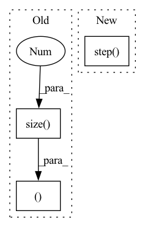

Pattern ID :8286
Before Change
x = torch.cat((x_s, x_t), dim=0)
outputs, outputs_adv = classifier(x, keep_adv_output=True)
y_s, y_t = outputs.narrow(0, 0, x_s.size(0)), outputs.narrow(0, x_s.size(0), x_t.size(0))
y_s_adv, y_t_adv = outputs_adv.narrow(0, 0, x_s.size(0)), outputs_adv.narrow(0, x_s.size(0), x_t.size(0))
cls_loss = F.cross_entropy(y_s, labels_s)
transfer_loss = mdd(y_s, y_s_adv, y_t, y_t_adv)
loss = cls_loss + transfer_loss
After Change
end = time.time()
for i in range(args.iters_per_epoch):
lr_scheduler.step()
optimizer.zero_grad()
// measure data loading time
data_time.update(time.time() - end)In pattern: SUPERPATTERN
Frequency: 3
Non-data size: 3
Instances Fragment ID: 29073259
Project Name: thuml/transfer-learning-library
Commit Name: 540d571d6454ca34ee2687a3fb6a2e63e27be111
Time: 2020-03-16
Author: JiangJunguang1123@outlook.com
File Name: examples/mdd.py
M Class Name: AnonimousClass
N Class Name: AnonimousClass
M Method Name: train(8)
N Method Name: train(8)
M Parent Class:
N Parent Class:
M File Name: examples/mdd.py
N File Name: examples/mdd.py
M Start Line: 107
M End Line: 146
N Start Line: 112
N End Line: 155
Before Change
def forward(self, x, keep_features=False):
features = self.backbone(x)
features = features.view(x.size(0 ) , -1)
features = self.bottleneck(features)
if keep_features:
return self.head(features), features
else:
return self.head(features)
def get_parameters(self):After Change
outputs = self.head(features)
if keep_adv_output:
features_adv = self.grl_layer(features)
self.grl_layer.step()
outputs_adv = self.adv_head(features_adv)
return outputs, outputs_adv
else:
return outputs Fragment ID: 29073258
Project Name: thuml/transfer-learning-library
Commit Name: 6715ce965493b31f0defccaf6c0b1a654ffd4a0a
Time: 2020-03-11
Author: JiangJunguang1123@outlook.com
File Name: dalib/adaptation/mdd.py
M Class Name: Classifier
N Class Name: Classifier
M Method Name: forward(3)
N Method Name: forward(3)
M Parent Class: nn.Module
N Parent Class: nn.Module
M File Name: dalib/adaptation/mdd.py
N File Name: dalib/adaptation/mdd.py
M Start Line: 151
M End Line: 159
N Start Line: 125
N End Line: 135
Before Change
x = torch.cat((x_s, x_t), dim=0)
outputs, outputs_adv = classifier(x, keep_adv_output=True)
y_s, y_t = outputs.narrow(0, 0, x_s.size(0)), outputs.narrow(0, x_s.size(0), x_t.size(0))
y_s_adv, y_t_adv = outputs_adv.narrow(0, 0, x_s.size(0)), outputs_adv.narrow(0, x_s.size(0), x_t.size(0))
cls_loss = F.cross_entropy(y_s, labels_s)
transfer_loss = mdd(y_s, y_s_adv, y_t, y_t_adv)
loss = cls_loss + transfer_loss
After Change
end = time.time()
for i in range(args.iters_per_epoch):
lr_scheduler.step()
optimizer.zero_grad()
// measure data loading time
data_time.update(time.time() - end) Fragment ID: 29073257
Project Name: thuml/transfer-learning-library
Commit Name: a5d345dfccf4fe0912edb7566476bf26cf0a9ac0
Time: 2020-03-16
Author: JiangJunguang1123@outlook.com
File Name: examples/mdd.py
M Class Name: AnonimousClass
N Class Name: AnonimousClass
M Method Name: train(8)
N Method Name: train(8)
M Parent Class:
N Parent Class:
M File Name: examples/mdd.py
N File Name: examples/mdd.py
M Start Line: 107
M End Line: 146
N Start Line: 112
N End Line: 155